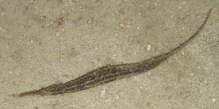
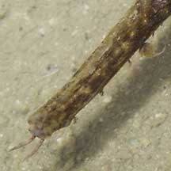
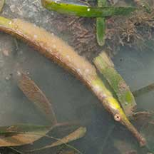
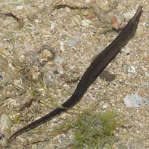
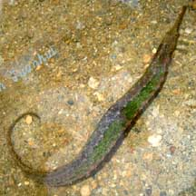

|
|
| fishes text index | photo index |
| Phylum Chordata > Subphylum Vertebrata > fishes > Family Syngnathidae > pipefishes |
| Alligator
pipefish Syngnathoides biaculeatus Family Syngnathidae updated Oct 2020 Where seen? This fat pipefish is sometimes seen on our Southern shores. Many were discovered during a seine net survey of Cyrene Reef among thickets of long among Tape seagrasses. It is generally found in sheltered coastal shallows among seagrasses and seaweeds. Features: 20cm, grows to about 29cm. Body long and angular cylindrical tapering to a thin tail. It has a pair of tentacles on a long narrow snout. It is sometimes also called the Double-ended pipefish probably because both ends look similar. The tail is prehensile and does not have a tail fin. Females often have dark spots or blotches. The males carry the eggs below the body and tail. May be green, brown or grey, to match their surroundings. Sometimes mistaken for other fishes that resemble sticks and twigs. Here's more on how to tell apart stick-like fishes commonly seen on our shores. |
 Cyrene Reef, May 08 |
 Pulau Semakau, Jun 05 |
 Long narrow snout. Tiny pelvic fins. Cyrene Reef, May 08 |
 A pair of tentacles on the long snout. Pulau Semakau, Jun 05 |
 Prehensile tail. Cyrene Reef, May 08 |
| Pipefish babies: Like the seahorse,
the male pipefish also carries the eggs. In some species, the male
has a pouch on the underside of his tail. For those without a pouch,
the eggs are glued to the underside of the male's tail or abdomen.
Often the eggs are embedded in a spongy tissue. Some have a pair of
flaps that fold over the eggs. Females have an ovipositor to lay eggs
on the male's body, where the eggs are then fertilised. In some species,
'pregnant' males may hang out together in small groups. The eggs develop
safely on dad's body. The father 'gives birth' to live young, which
emerge as miniatures of the adults. Some pipefishes may perform courtship dances before mating. Unlike seahorses, a mating pair of pipefishes may not remain faithful only to one another. A female might lay her eggs on several males, and a male might carry the eggs of several females. |
 Eggs on the underside. Pulau Semakau, Jun 05 |
 Eggs on the underside. Cyrene, May 08 |
 Juvenile? Pulau Sekudu, Feb 07 |
| What does it eat? It feeds on
tiny planktonic animals. Human uses: This is among the pipefishes used in traditional Chinese medicine, to extract 'Hailong' considered an important drug. This species has been reared in captivity. Status and threats: See Family Sygnathidae for threats to pipefishes and seahorses. |
| Alligator pipefishes on Singapore shores |
On wildsingapore
flickr
|
| Other sightings on Singapore shores |
 Pulau Semakau, May 08 Photo shared by Lin Juanhui on flickr |
Links
References
|